Oqimli
Harakat to‘xtamaydi: shakllar yumaloq, o‘tishlar silliq, sahifalar havodor.
Toshkent tirbandliksiz. Har chorrahada aqlli qaror.
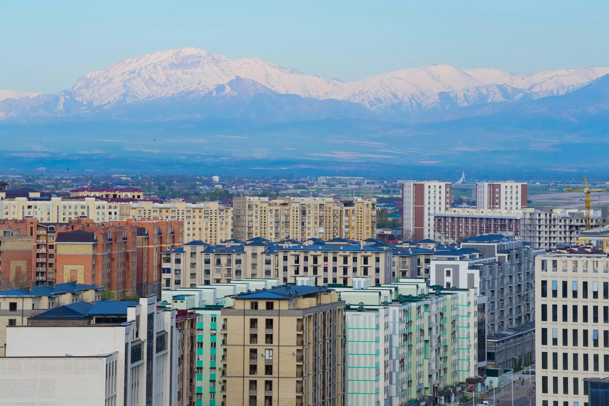
Toshkent · Chimyon tog‘lariBu qo‘llanma OQIM AI qanday ko‘rinishi, qanday gapirishi va o‘zini qanday tutishini bir joyga jamlaydi.
Biz — “Guruh 4” talabalari — Toshkent chorrahalaridagi navbatlarni sun’iy intellekt yordamida qisqartirish g‘oyasidan boshladik. Ish davomida tushundik: aqlli tizim avvalo tushunarli va ishonchli bo‘lishi kerak.
Logo, ranglar, shriftlar va suratlar bitta fikrga xizmat qiladi — shahar oqimi xotirjam va aniq bo‘lsin. Qoidalarni ehtiyot bilan qo‘llang, lekin ularni qotib qolgan qonun deb bilmang: brend biz bilan birga o‘sadi.
Hurmat bilan,
Guruh 4 jamoasi
Sun’iy intellekt asoslari · 2025–2026
Qo‘llanma oltita bo‘limdan iborat. Har sahifada bitta asosiy g‘oya — o‘qish ham, topish ham oson.
Har bir dizayn qarori shu besh sifatdan biriga tayanadi. Agar element ulardan hech biriga xizmat qilmasa — u ortiqcha.
Harakat to‘xtamaydi: shakllar yumaloq, o‘tishlar silliq, sahifalar havodor.
Har qaror ma’lumotga tayanadi. Murakkab narsani oddiy tilda tushuntiramiz.
Raqam faqat manbasi bilan. Uydirma va mubolag‘aga o‘rin yo‘q.
Toshkent ko‘chalari, Chimyon tog‘lari va o‘zbek naqshidagi to‘rt bargli gul.
OpenStreetMap ma’lumotlari, ochiq kod va har kimga tushunarli interfeys.
Svetofor endi soatga emas, ko‘chaga qarashi kerak. OQIM AI GPS ma’lumotlari va neyron tarmoq yordamida har chorrahada yashil chiroq qancha yonishini o‘zi hal qiladi.
Har bir svetofor qarorini real oqimga asoslash — haydovchi, piyoda va tez yordam vaqtini tejash.
770 000+
transport vositasi Toshkent yo‘llarida
400 000
mashinaga mo‘ljallangan yo‘l sig‘imi
$343 mln
tirbandlikdan yillik iqtisodiy zarar
Loyiha tadqiqoti baholari
Tirbandliksiz Toshkent — o‘z ko‘chalarini his qiladigan ochiq va tushunarli shahar.
Biz shahar bilan do‘stona, lekin jiddiy gaplashamiz. Texnik atamani oddiy tilda tushuntiramiz va hech qachon oshirib aytmaymiz.
Chorsu chorrahasida navbat kamaydi. Shimol yo‘nalishiga yashil chiroq uzaytirildi.
INQILOBIY AI tirbandlikni butunlay yo‘q qiladi!!!
DQN — tajribadan o‘rganadigan neyron tarmoq. U navbatlarni ko‘rib, eng foydali fazani tanlaydi.
Epsilon-greedy siyosatli Double DQN arxitekturamiz replay buffer orqali…
Tez yordam yo‘lda. Marshrutdagi svetoforlar oldindan yashilga o‘tadi.
DIQQAT!!! Favqulodda vaziyat! Darhol yo‘lni bo‘shating!
“Chorraha” belgisi: g‘oyasi, qurilishi, o‘lchamlari va uni to‘g‘ri qo‘llash qoidalari.
To‘rt yo‘nalishdan kelgan oqim — to‘rtta GPS-tomchi — markazdagi bitta aqlli nuqtada uchrashadi. Shu nuqta AI qarori: qaysi yo‘nalishga yashil yonishini tanlaydi.
Birgalikda shakl o‘zbek naqshidagi to‘rt bargli gulni eslatadi — texnologiya Toshkent tilida gapiradi.
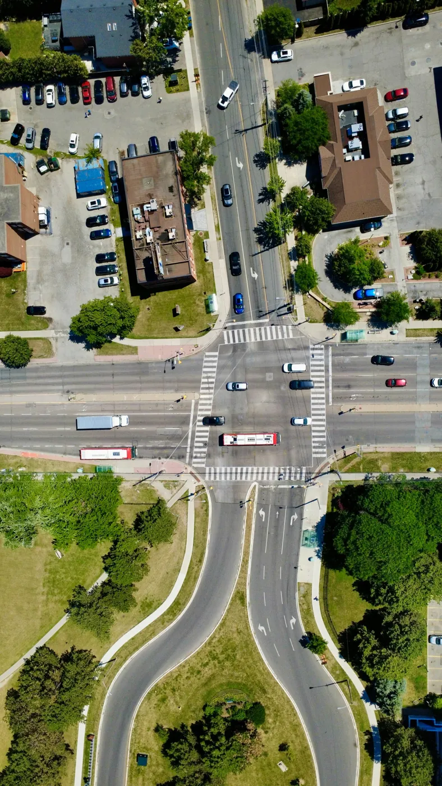
Chorraha — tepadanGorizontal lockup — asosiy versiya. Chapda “Chorraha” belgisi, o‘ngda geometrik “oqim” so‘z belgisi va kichik “AI”. “i” harfining nuqtasi — O‘rik rangli signal, belgining markaziy nuqtasi bilan qofiyadosh.
Imkon bo‘lsa, doim shu versiyadan foydalaning.
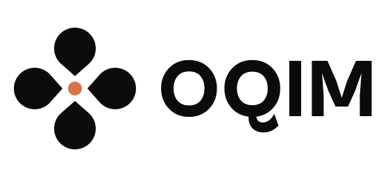
Asosiy gorizontal versiya · oq fonda AsosiyBelgi 256 birlikli kanvasda qurilgan. Bo‘sh maydon x — bitta tomchi diametri, ya’ni belgi balandligining taxminan uchdan biri. Bu maydonga hech qanday matn yoki tasvir kirmaydi.
Belgi 24 px dan kichik bo‘lsa, “kichik kesim” versiyasiga o‘ting: tomchilar yo‘g‘onroq, markaz nuqtasi olib tashlangan — 16 px da ham to‘rt bargli shakl o‘qiladi.
Oltita rasmiy versiya bor. Joy va fonga qarab tanlang — lekin ularni qayta chizmang va birlashtirmang. Barcha fayllar brand/logo/ papkasida.
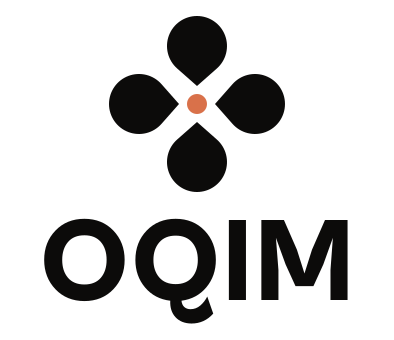
Logo — tayyor fayl, xomashyo emas. Quyidagi xatolar brendni tanib bo‘lmas qiladi. Shubha bo‘lsa, asosiy versiyani oq fonda ishlating.
Oq va Tuman fonda — asosiy rangli versiya. Tun qorasida — to‘q versiya (Krem tomchilar, O‘rik nuqta). O‘rik fonda faqat qora bir rangli versiya.
Foto ustida — oq versiya, suratning tinch va to‘q qismiga.
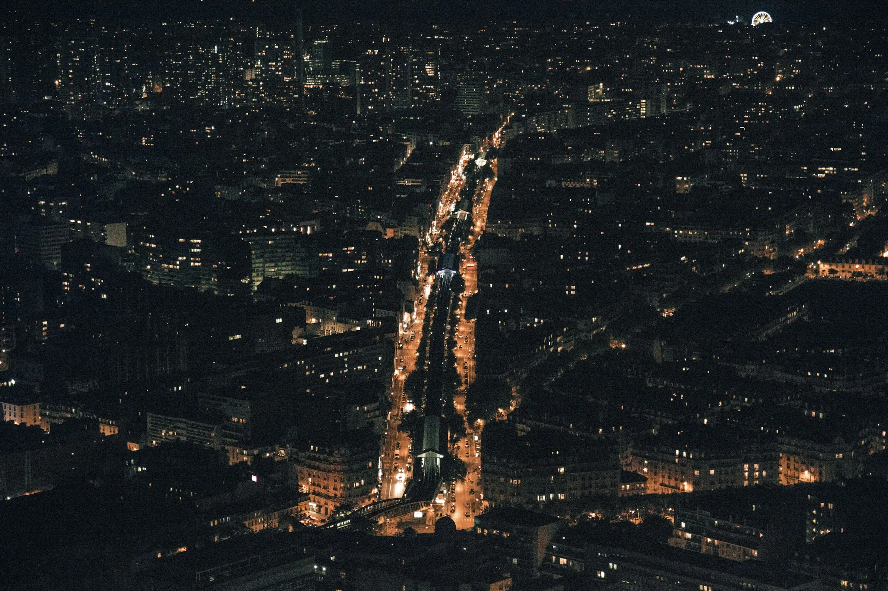
“Shom o‘rigi” — Toshkent oqshomining iliq ranglari: tun qorasi, o‘rik va tuman.
Brendning asosiy rangi — oq. Tuman yuzalarni ajratadi, Tun qorasi kontrast beradi. O‘rik — tuzdek: oz bo‘lsa mazali, ko‘p bo‘lsa buziladi. Qolgan 3% — O‘rik to‘q, Shom binafsha va Kul.
O‘rik — to‘q fondagi urg‘u. O‘rik to‘q — oq fondagi urg‘u: faqat yirik matn, ikon va signal nuqtasi. CMYK qiymatlari taxminiy: bosmadan oldin namuna bilan tekshiring.
Tun qorasi
Matn, to‘q kartalar, muqovalar
Oq
Asosiy fon
O‘rik
Urg‘u — to‘q fonda
O‘rik to‘q
Urg‘u — oq fonda
Kulranglarimiz sovuq emas — ularda ozgina qum va o‘rik bor. Shu sababli oq fon bilan yonma-yon ham “iliq” qoladi. Shom binafsha — faqat chuqurlik va gradientlar uchun.
Tuman
Ikkilamchi yuza, kartalar
Krem
To‘q fonda matn
Shom binafsha
Chuqurlik, gradientlar
Kul
Ikkilamchi matn
Chiziq
Ajratuvchilar, chegaralar
Yashil, sariq va qizil — svetofor tili. Ular faqat interfeys va ma’lumotlarda holatni bildiradi.
Erkin
Signal yashil
O‘rtacha
Signal sariq
Tirband
Signal qizil
 Tirband zona
© OpenStreetMap hissadorlari
Tirband zona
© OpenStreetMap hissadorlari
Nisbatlar WCAG formulasi bo‘yicha hisoblangan. Oddiy matn uchun kamida 4,5:1, yirik matn (24 px yoki 19 px qalin) uchun 3:1 kerak.
19,67:1
Tun qorasi · Oq fonda
17,60:1
Tun qorasi · Tuman fonda
17,20:1
Krem · Tun qorasi fonda
9,45:1
O‘rik · Tun qorasi fonda
13,41:1
Krem · Shom binafsha fonda
5,11:1
Kul · Oq fonda — ikkilamchi matn
3,28:1
O‘rik to‘q · Oq fonda — faqat yirik urg‘u
2,08:1
O‘rik · Oq fonda — matn uchun yaroqsiz
Inter — aniqlik uchun, Instrument Serif — bitta iliq urg‘u uchun.
Variable shrift, optik o‘lcham o‘qi 14–32. Sarlavhalar 600, matn 400/500. Tracking o‘lchamga bog‘liq: katta matn zichroq, kichik yorliq ochiqroq.
| O‘lcham | Tracking | Leading |
|---|---|---|
| 80–96 px | −0,035em | 1,04 |
| 40–64 px | −0,03em | 1,04 |
| 17 px matn | −0,022em | 1,47 |
| 11–13 px yorliq | 0 / +0,08em | 1,2–1,4 |
Aa
ABCDEFGHIJKLMNOPQRSTUVXYZ O‘ G‘
abcdefghijklmnopqrstuvxyz o‘ g‘ ’
0123456789 — “ ” · ×
Chorraha
opsz 14 · matn
Chorraha
opsz 32 · sarlavha
Faqat italik, faqat 400 va faqat sarlavha ichida — bitta iliq so‘z, xuddi qo‘lda yozilgan izohdek. Uning x‑balandligi Inter’dan past, shuning uchun 1,12 barobar kattaroq teriladi.
Shahar oqimini birga
boshqaraylik
Mashinadan svetoforgacha — to‘rt qadam
Mashinadan svetoforgacha — to‘rt qadam
Har pog‘ona aniq vazifaga ega. Bitta sahifada uchtadan ortiq o‘lcham kamdan-kam kerak bo‘ladi.
Mashinadan svetoforgacha — to‘rt qadam
GPS koordinatalari OpenStreetMap’dagi Toshkent yo‘llariga bog‘lanadi, DBSCAN tirbandlik zonalarini topadi, DQN esa fazani tanlaydi.
Jonli xaritani ochishO‘ va G‘ harflaridagi belgi — chapga ochilgan ‘ (U+2018). Tutuq belgisi — o‘ngga ochilgan ’ (U+2019). Oddiy apostrof (') va teskari tirnoq (`) ishlatilmaydi.
o‘ g‘
ma’no
| To‘g‘ri | Noto‘g‘ri | Izoh |
|---|---|---|
| qo‘llanma | qo'llanma · qo`llanma | ‘ — U+2018 |
| g‘oya | g'oya · g`oya | ‘ — U+2018 |
| ma’lumot | ma'lumot · ma‘lumot | ’ — U+2019 |
| Sun’iy intellekt | Sun'iy · Sun`iy | ’ — U+2019 |
| O‘zbekiston | O'zbekiston · Ozbekiston | ‘ — U+2018 |
| e’lon | e'lon · e`lon | ’ — U+2019 |
Haqiqiy Toshkent: ko‘k osmon, qorli Chimyon, tungi chiroqlar va tepadan ko‘rilgan chorrahalar.
Faqat haqiqiy fotosuratlar (Unsplash litsenziyasi): Toshkent, Chimyon, chorrahalar tepadan, svetofor, tez yordam, navigatsiya. Ranglar yorqin va toza.
Sovuq “stock” texnologiya rasmlari, miya, mikrosxema va robot klishelari, uydirma portretlar — taqiqlangan.
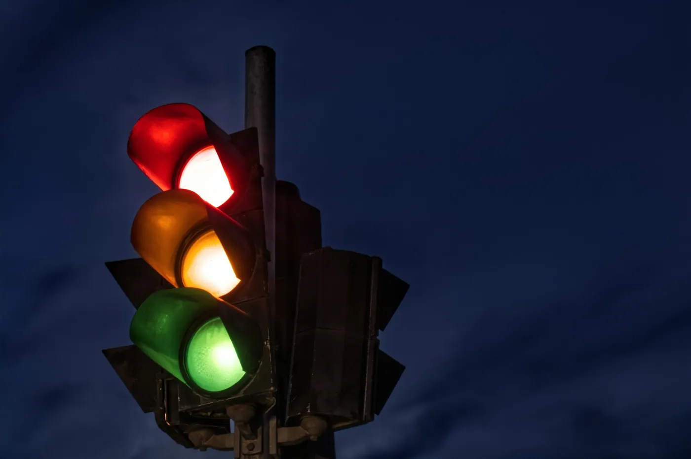
Miya, mikrosxema, robot, ko‘k raqamli to‘r — bu klishelar biz haqimizda hech narsa demaydi.
Bitta katta “qahramon” surat va ikki kichik tafsilot. Kartalar orasidagi masofa 16 px, radius 28 px. Shisha yorliq faqat suratning tinch qismida.
Tun — mahsulotning tabiiy muhiti: chiroq izlari, yashil signal, tez yordam. To‘q sahifada suratlar o‘zi yorug‘lik manbaiga aylanadi.
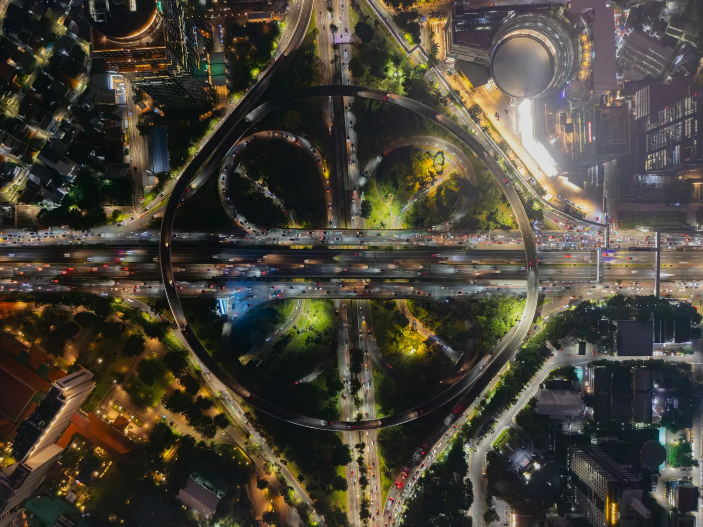
Tirbandlik zonalariXarita — bizning ikkinchi suratimiz. Och, tinch fon ustida faqat oqim va zonalar rang oladi. Interfeys elementlari surat ustida shisha material bilan turadi.
Xarita © OpenStreetMap hissadorlari
Toshkent markazi
Belgining tomchilari takrorlanib, shahar ko‘chalari to‘riga o‘xshash ritm hosil qiladi. O‘rik nuqtalar — har chorrahadagi qaror.
Interfeys, panjara, ijtimoiy tarmoqlar, veb-sayt va mobil ilova.
Barcha komponentlar jonli saytdagidek: pill tugmalar 48 px, kartalar 28 px radius, yorliqlar KATTA HARF 11 px, foto ustida shisha material.
Svetofor navbatni ko‘radi — moslashuvchan va aqlli.
Qanday ishlaydiGPS koordinatalari OpenStreetMap’dagi Toshkent yo‘llariga bog‘lanadi.
Veb: 1200 px konteyner, 12 ustun, kartalar orasida 16 px. Ijtimoiy tarmoq: 1080 px kanvas, 6 ustun va 80 px xavfsiz chekka.
Har postda bitta fikr: katta sarlavha, bitta urg‘u so‘z, bitta surat yoki ma’lumot. Logo — doim bir xil joyda, kichik.
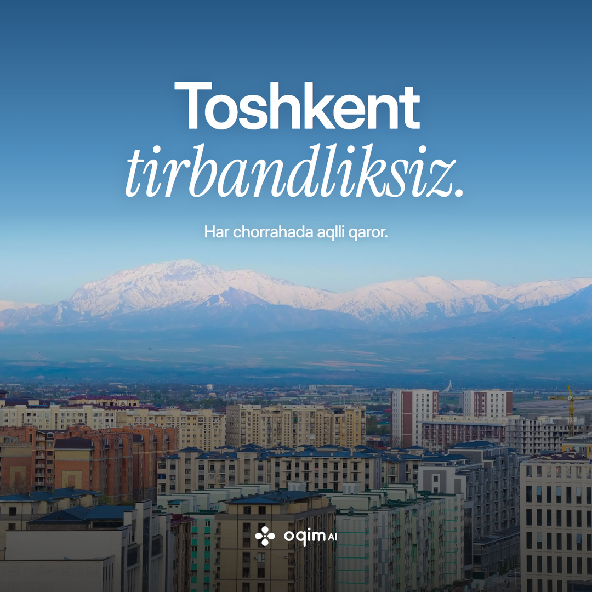
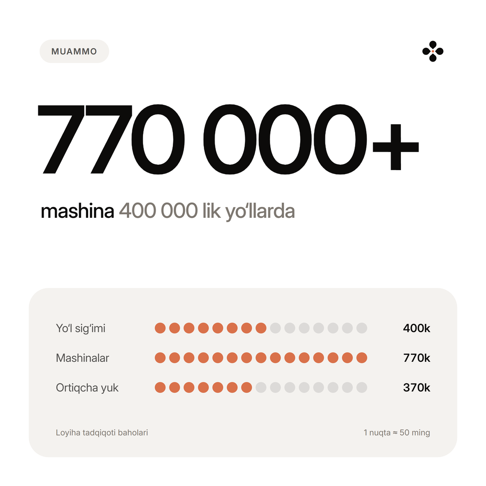
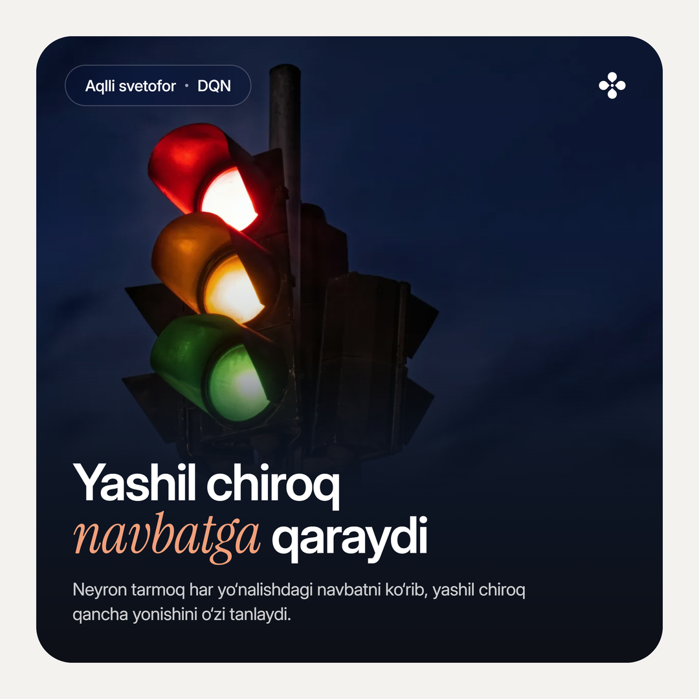
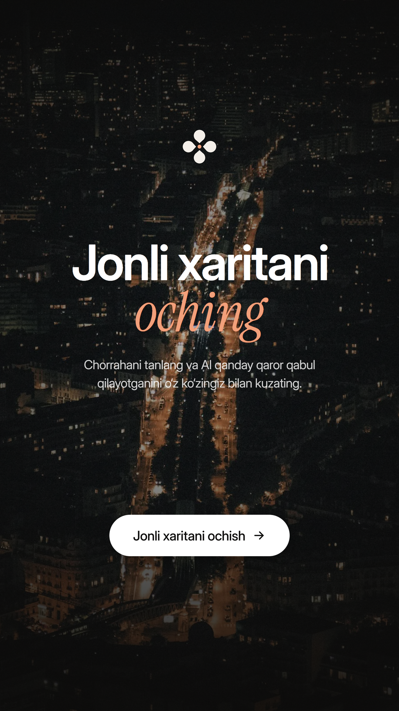
Qahramon surat ustida katta sarlavha, keyin havodor bo‘limlar: imkoniyatlar karuseli, loyiha haqida, to‘rt qadam va to‘q CTA. Har bo‘lim — bitta g‘oya.
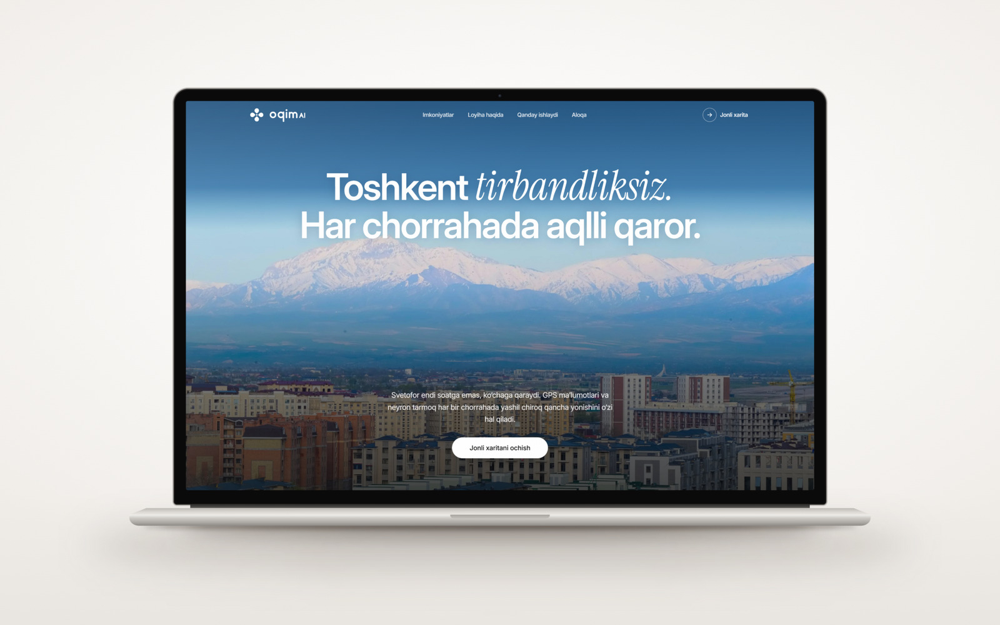
Mobil versiyada ham xuddi shu tizim: sarlavha 40 px, matn 15–17 px, tugmalar to‘liq kenglikda va kamida 44 px balandlikda.
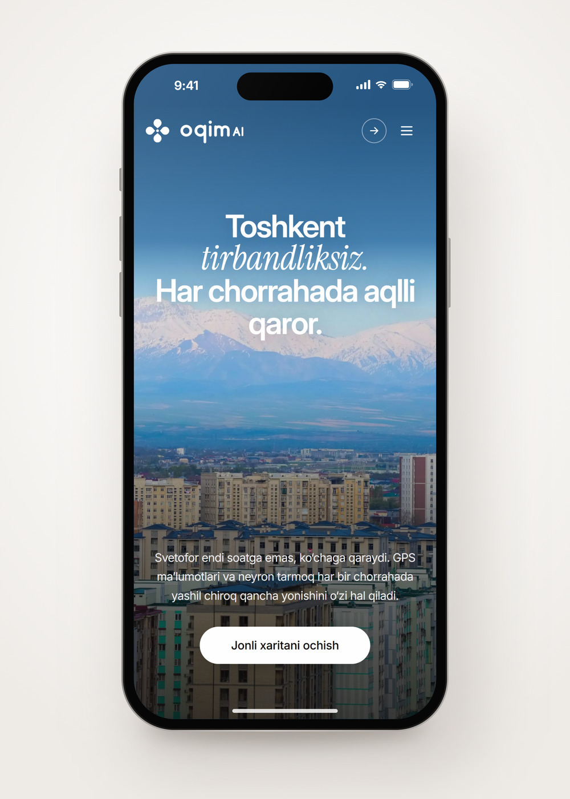
Har qanday telefon tizimga real mashina sifatida ulanadi — ilova o‘rnatish shart emas.
Haydovchi oddiy tilda so‘raydi, tizim jonli xarita asosida javob beradi.
Vizitka, blank, konvert, yo‘nalish belgisi va ikonlar — brend qog‘ozda va ko‘chada.
Old tomoni — Tun qorasi fonda to‘q versiyadagi belgi. Orqa tomoni — oq fonda ism, lavozim va aloqa. Bitta urg‘u — O‘rik nuqta.
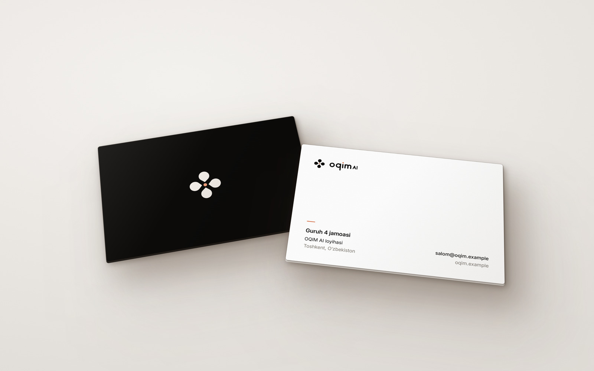
Logo — chap yuqorida, aloqa ma’lumotlari — pastki qatorda. Matn chap ustunga tekislanadi, sarlavhada bitta urg‘u so‘z bo‘lishi mumkin.
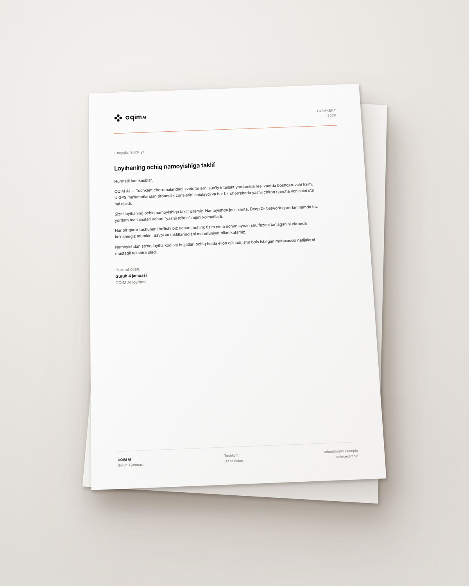
Old tomonda faqat logo va qaytarish manzili. Ichki tomonda — Tun qorasi fonda “Chorraha” naqshi: konvert ochilganda brend kutib oladi.
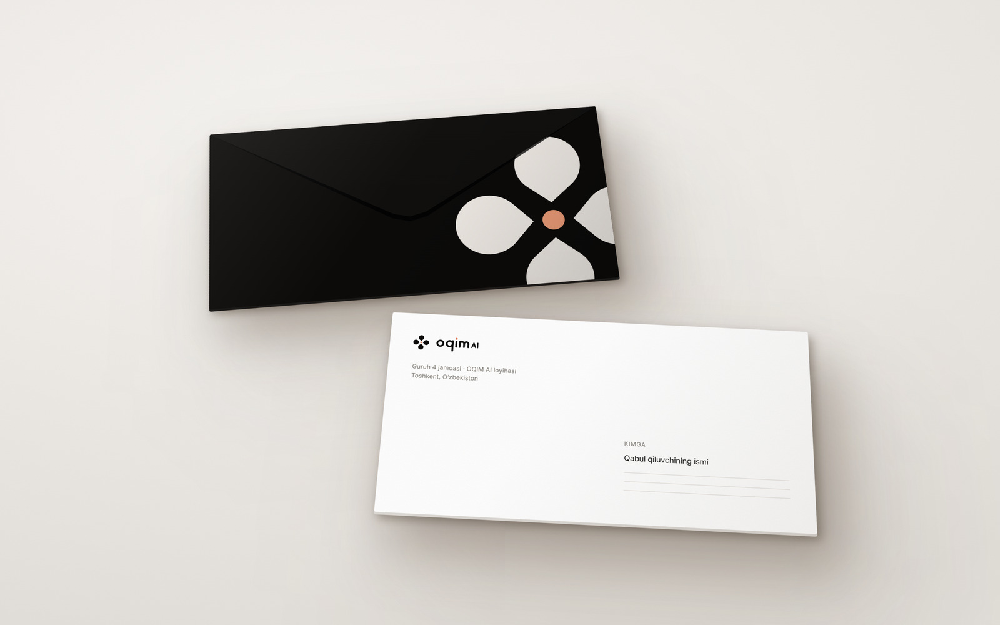
Banner va ko‘rsatkichlarda — to‘q fon, katta Inter 600 sarlavha va faqat bitta urg‘u. Uzoqdan o‘qilishi uchun matn kam, kontrast yuqori.
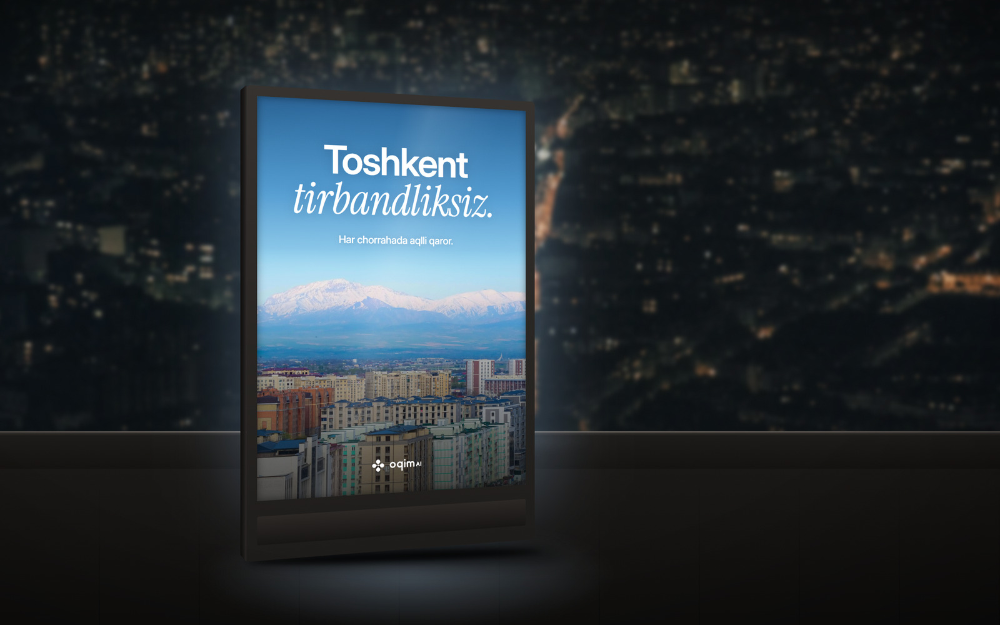
Tabler Icons to‘plami: 24 px panjara, 1,75–2 px chiziq, yumaloq uchlar. Ikon oq quti ichida O‘rik to‘q rangda yoki to‘q kartada O‘rik rangda.
Qo‘llanmada javob topilmagan holat bo‘lsa — taxmin qilmang. Jamoaga murojaat qiling: birga eng to‘g‘ri yechimni topamiz va qo‘llanmani yangilaymiz.
Sun’iy intellekt asoslari kursi · 2025–2026. Brend, logo va ushbu qo‘llanma mualliflari.
Landing sahifa va jonli xarita — dizayn tilining eng yangi manbasi. Shubha bo‘lsa, saytga qarang.
Toshkent tirbandliksiz. Har chorrahada aqlli qaror.